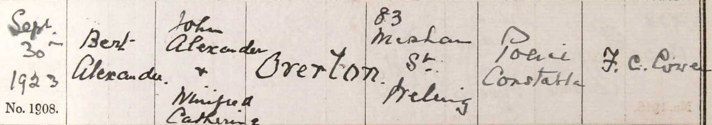

Bert Alexander Overton 1923 - c2003
[ Home ] | [ Calendar ] | [ Surnames Index ] | [ Errors ] | [ Family History ]A drilling machine hand and the older of 2 children of John Overton (a metropolitan police constable) and Mona Long, Bert Overton, the third cousin once-removed on the father's side of Nigel Horne, was born in Dartford, Kent, England on 23 Apr 19231,2,3 and baptised in East Wickham, Kent, England on 30 Sept 1923. On 29 Sept 1939, he was living at 83 Wickham Street, Bexley, London, England1.
He died c. Nov 2003 in Bexley3.
Parents
- John Alexander was born on 18 Mar 1891
- Mona Winifred Catherine was born on 27 Jun 1897
Citations
- 1939 Register - Findmypast (was recorded at this address)
- England & Wales births 1837-2006 - Findmypast
- England & Wales deaths 1837-2007 - Findmypast
Media
Bert Alexander Overton - Baptism

England & Wales births 1837-2006 - BMD/B/1923/2/AZ/001048/130
England & Wales deaths 1837-2007 - BMD/D/2003/10/85651044
1939 Register - TNA-R39-1224-1224E-009-01
Family Tree

Map
Generated by ged2site. Last updated on Jul 3, 2024